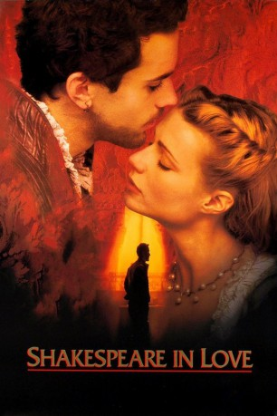

#1344 Shakespeare in Love
Auszeichnungen: 7 Oscars gewonnen für 6 Oscars nominiert 3 GoldenGlobes gewonnen 4 BAFTA-Awards gewonnen
 
 IMDB-Wertung: 7.1 / 10
IMDB-Wertung: 7.1 / 10  Metascore: 87
Metascore: 87 
Man schreibt den Sommer 1593 in London. Der junge William Shakespeare leidet unter einer Schreibblockade, ihm fehlt die Muse, die ihn wachküßt. Als er jedoch der ebenso hübschen wie intelligenten Lady Viola begegnet und sich in sie verliebt, findet er seine Inspiration wieder, und sein ursprünglich geplantes Lustspiel Romeo und Ethel, die Tochter des Piraten wandelt sich zum Meisterwerk Romeo und Julia. Doch aus Wills Liebe zu Viola soll sein ganz persönliches Liebesdrama entstehen. Alles fängt mit Violas Wunsch an, Schauspielerin zu werden. Da der Mimenberuf aber im elisabethanischen Zeitalter für Frauen strengstens untersagt war, schleicht sie sich als junger Mann verkleidet, ohne Wills Wissen in seine Theatergruppe ein und übernimmt die Rolle des Romeo. Und zu allem Übel soll die auch noch, auf Befehl von Königin Elizabeth, den unerträglichen Lord Wessex heiraten. Vorhang auf für das amüsanteste Chaos der Filmgeschichte.
Jahr: 1998
Dauer: 123 Minuten
FSK: 6
Land: USA Studio: MiramaxTonspuren:
Untertitel:
Auflösung: 1080p (1920x820) Größe: 11673 MB
Genre: Komödie, Drama, Geschichte, Liebe
Regisseur: John Madden
Drehbuch: Marc Norman, Tom Stoppard
Soundtrack: Stephen Warbeck
Darsteller:
 Geoffrey Rush als Philip Henslowe
Geoffrey Rush als Philip Henslowe Tom Wilkinson als Hugh Fennyman
Tom Wilkinson als Hugh Fennyman Steven O'Donnell als Lambert
Steven O'Donnell als Lambert Joseph Fiennes als Will Shakespeare
Joseph Fiennes als Will Shakespeare Antony Sher als Dr. Moth
Antony Sher als Dr. Moth Martin Clunes als Richard Burbage
Martin Clunes als Richard Burbage Simon Callow als Tilney - Master of the Revels
Simon Callow als Tilney - Master of the Revels Judi Dench als Queen Elizabeth
Judi Dench als Queen Elizabeth- Nicholas Boulton als Henry Condell
 Gwyneth Paltrow als Viola De Lesseps
Gwyneth Paltrow als Viola De Lesseps Imelda Staunton als Nurse
Imelda Staunton als Nurse Colin Firth als Lord Wessex
Colin Firth als Lord Wessex- Barnaby Kay als Nol
 Jim Carter als Ralph Bashford
Jim Carter als Ralph Bashford Mark Williams als Wabash
Mark Williams als Wabash- David Curtiz als John Hemmings
 Gregor Truter als James Hemmings
Gregor Truter als James Hemmings- Jill Baker als Lady De Lesseps
 Ben Affleck als Ned Alleyn
Ben Affleck als Ned Alleyn Roger Morlidge als James Armitage
Roger Morlidge als James Armitage- Daniel Brocklebank als Sam Gosse
- Lucy Speed als Second Whore
- Kelley Costigan als Theatregoer , uncredited
 Rupert Everett als Christopher Marlowe , uncredited
Rupert Everett als Christopher Marlowe , uncredited- John Inman als Lady Capulet in play , uncredited
- Tim McMullan als Frees
- Steven Beard als Makepeace - the Preacher
- Patrick Barlow als Will Kempe
- Sandra Reinton als Rosaline
- Bridget McConnell als Lady in Waiting
 Georgie Glen als Lady in Waiting
Georgie Glen als Lady in Waiting- Desmond McNamara als Crier
- Paul Bigley als Peter - the Stage Manager
- Jason Round als Actor in Tavern
- Rupert Farley als Barman
- Adam Barker als First Auditionee
- Joe Roberts als John Webster
- Harry Gostelow als Second Auditionee
- Alan Cody als Third Auditionee
- Simon Day als First Boatman
- Amber Glossop als Scullery Maid
- Robin Davies als Master Plum
- Hywel Simons als Servant
- Nicholas Le Prevost als Sir Robert De Lesseps
- Timothy Kightley als Edward Pope
- Mark Saban als Augustine Philips
- Bob Barrett als George Bryan
- Roger Frost als Second Boatman
- Rebecca Charles als Chambermaid
- Richard Gold als Lord in Waiting
Datei: X:\1998\Shakespeare in Love (1998, FSK6, 1920x820).mkv seit 24.06.2015
Festplatte: HD 1996-2002
 Es gibt insgesamt 86 Filme in der Gruppe '1998'
Es gibt insgesamt 86 Filme in der Gruppe '1998'